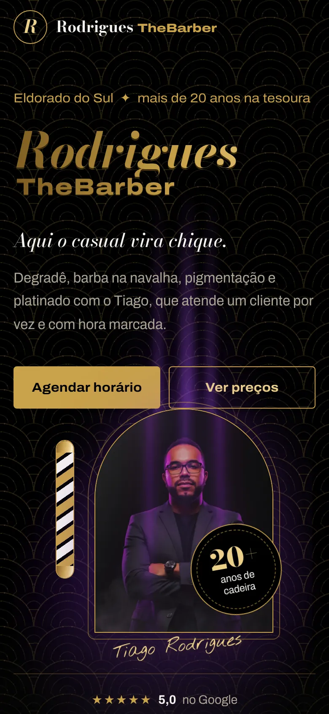
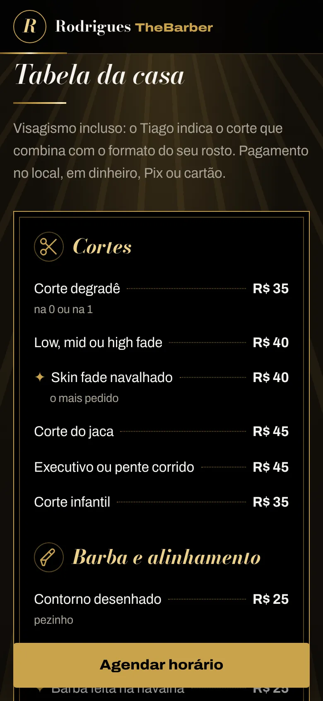
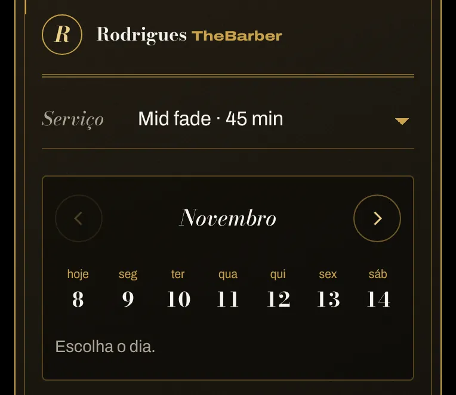
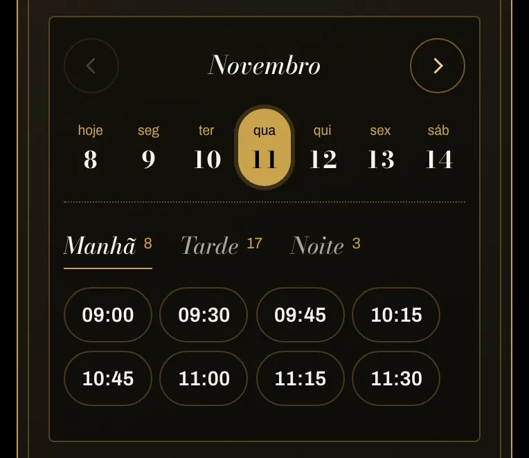
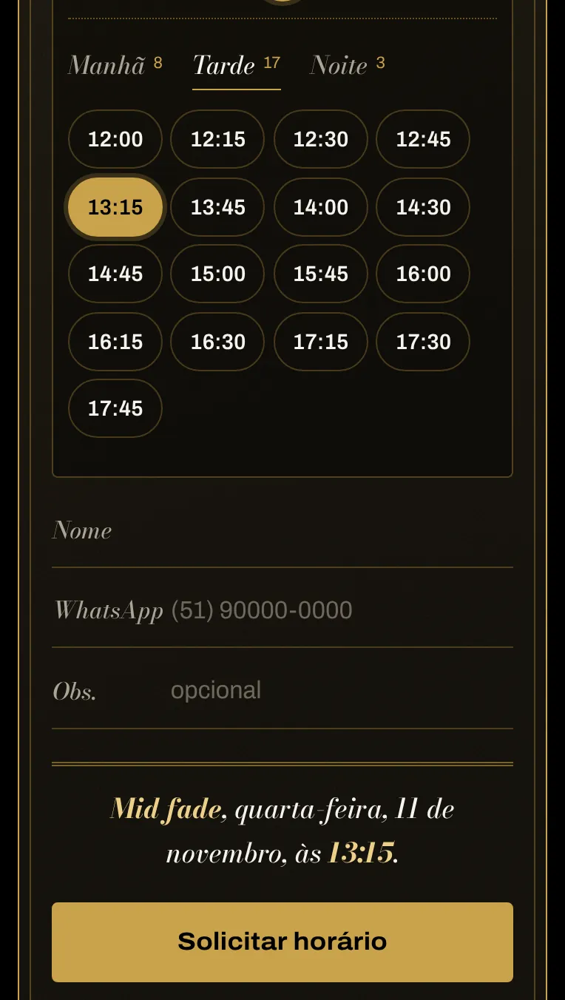
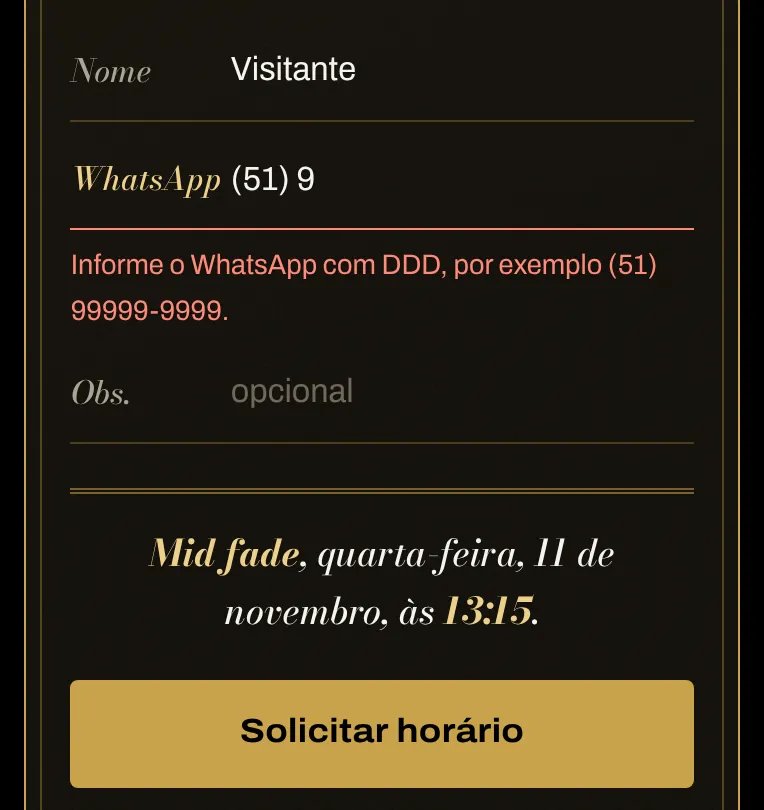

Cliente real · Barbearia em Eldorado do Sul
Rodrigues TheBarber
O primeiro site de uma barbearia de um profissional só: apresenta o trabalho, mostra os preços e recebe pedidos de horário pelo celular.
Visitar o site Rodrigues TheBarber (abre em nova aba)


O desafio
A barbearia ainda não tinha um endereço próprio na internet. O site precisava apresentar o profissional, deixar serviços e preços à vista e tornar simples o pedido de horário.
O que foi construído
- Identidade em preto, dourado e roxo, com o posicionamento “aqui o casual vira chique”.
- Tabela de serviços com preços e galeria de trabalhos.
- Pedido de horário em quatro passos, com resumo antes de enviar.
- Painel privado onde o profissional recebe e confirma os pedidos.
- Botão de agendamento sempre à mão no celular.
Resultado
Site aprovado pelo profissional e publicado.



